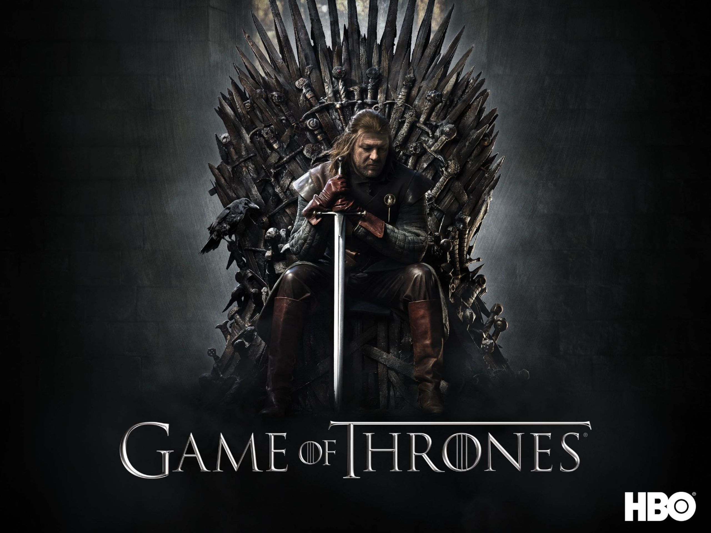
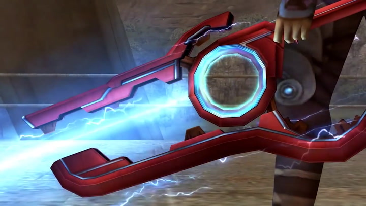

Over mijn portfolio
Een portfolio is belangrijk omdat het een manier is om te laten zien wie je bent en wat je kunt. Het is als een persoonlijke etalage waar je trots kunt zijn op je werk en dat kunt delen met anderen. Of je nu op zoek bent naar een baan of nieuwe klanten, een portfolio helpt je om jezelf te presenteren op een manier die woorden alleen niet kunnen.
Het geeft anderen een duidelijk beeld van je stijl, vaardigheden en wat je hebt bereikt, en dat maakt je veel geloofwaardiger. Het is een essentieel hulpmiddel om te laten zien wat je hebt te bieden!
Zelf ben ik begonnen aan mijn portfolio door eerst een moodboard te maken om goed in beeld te brengen wat ik hierin terug zou willen laten komen en wat een goed beeld van mij zou laten zien. Hier ben ik mee begonnen door goed mijn foto’s terug te kijken en wat mij goed hierin laat zien van wie ik ben en wat ik doe.
.png)
Moodboard – Combinatie van dingen waar mijn interesses liggen en wat mij mezelf maakt.
Het is belangrijk om mezelf in een project te laten zien omdat het m’n persoonlijkheid, visie en unieke aanpak weerspiegelt. Door mezelf te laten zien, geef je anderen een beter begrip van wie ik ben als professional en hoe ik denk. Dit maakt het werk menselijker en authentieker, wat zorgt voor een sterkere connectie met je publiek.
Daarnaast laat het zien dat je betrokken bent en trots bent op wat je hebt gecreëerd, wat je geloofwaardigheid en vertrouwen vergroot. Kortom, door jezelf te laten zien, maak je het project meer herkenbaar en krachtiger.
Ik heb in mijn moodboard een aantal verschillende dingen staan zoals mijn favoriete games, series, muziek, mezelf en mijn dierbaren. De reden dat dit belangrijk voor mij is, is omdat ik hiermee ben opgegroeid, en het een grote impact op mij heeft gehad en nog steeds heeft.
Het is door games zoals Xenoblade dat ik geïnspireerd ben geraakt om een game developer te worden en dat ik naar deze opleiding ben gegaan. Die passie wil ik graag in mijn werk terug laten komen. Ik ben erg blij met de keuzes die ik voor mijn portfolio heb gemaakt en wil hierin beschrijven waarom ik voor deze keuzes ben gegaan en hoe ik dat in mijn werk netjes en in mijn eigen stijl heb terug laten komen.
Mijn hoofdpagina
Als je op de site komt, word je gelijk voor een afbeelding gezet van drie zwaarden — deze komen uit de game Xenoblade. Ik vind dat dit een heel mooi beeld weergeeft van wat ik leuk vind, maar het maakt het niet te druk waardoor het professioneel en gepast blijft.
Ook geeft het de hoofdpagina gelijk een beeld en kom je niet meteen in lappen tekst terecht, maar kijk je eerst naar een rustig plaatje met subtiele kleuren.
Ik sta ook goed achter mijn keuze om een beetje neon-achtige kleuren toe te voegen aan mijn sitebalkjes. Dit is een referentie naar de lightsabers uit Star Wars, en ik vond het een leuk alternatief om toch wat meer kleur te brengen aan mijn donkere kleurenthema.
Ik ben zelf namelijk ook niet echt van veel kleuren, maar om iets op zwart-wit te zetten past dan ook weer niet bij mij. Een beetje kleur op een website maakt het visueel aantrekkelijker en helpt de aandacht van de bezoeker te trekken.
Het zorgt voor een betere gebruikerservaring door een frisse, dynamische uitstraling te geven en bepaalde elementen, zoals knoppen of belangrijke informatie, te benadrukken. Kleur kan ook emoties oproepen en de hele sfeer van de site versterken, waardoor bezoekers langer blijven en zich meer verbonden voelen met de inhoud.
Verder over mijn keuzes: je ziet niet alleen maar vierkante en rechte vormen. Dit heb ik expres zo gemaakt. Niet alleen vierkante vormen gebruiken op een website zorgt voor variatie en visuele interesse. Door verschillende vormen, zoals ronde of organische lijnen, toe te voegen, wordt de site dynamischer en aantrekkelijker.
Het breekt de strakke, rechte lijnen en maakt de site speelser en minder saai. Dit helpt om de aandacht vast te houden en de algehele esthetiek van de site te verbeteren.
Zelf ben ik ook nog bezig geweest met andere designs, voor bijvoorbeeld de pagina's van de projecten die ik gemaakt heb gedurende semester 2, de style waarmee ik deze projecten presenteer is allemaal gebaseerd op dingen die ik leuk vind., de manier van presenteren volgt allemaal ongeveer hetzelfde format (behalve bij het persoonlijke project) maar toch net anders vormgegeven.
Projectstijlen
De styling van het Branding Project heb ik gebaseerd op The Weeknd en dan vooral de stijl van het "After Hours" album. Met rode kleuren en neon-style teksten.

Branding Project – Geïnspireerd op The Weeknd
De styling van het UX Project heb ik gebaseerd op de donkere, mysterieuze sfeer van Game of Thrones. Met diepe kleuren, veel zwarttinten, zachte gloed-effecten en een stoere serif-font heb ik geprobeerd een gevoel van drama en ernst over te brengen.

UX Project – Geïnspireerd op Game of Thrones
Voor het Development Project heb ik inspiratie gehaald uit de wereld van Xenoblade Chronicles. De visuals zijn gebaseerd op het contrast tussen natuur en technologie, met hemelse tinten blauw, glowy accenten en een zwevend design, gebaseerd op de Monado (een zwaard uit het spel).

Development Project – Xenoblade Chronicles
De look van mijn persoonlijke project is gebaseerd op de Wii interface: clean, vriendelijk en licht. Veel witruimte, afgeronde hoeken en zachte grijstinten. Het moest voelen als thuiskomen, makkelijk te navigeren, en simpel maar effectief. De nostalgische verwijzing naar het Wii-menu gaf het geheel een persoonlijke touch die goed past bij het idee van een eigen project. Het past er voornamelijk bij omdat mijn persoonlijke project ook een game is.

Persoonlijk Project – Wii-stijl interface
Inspiratiebronnen
Voor het ontwerp van mijn portfolio heb ik inspiratie gehaald uit verschillende websites en creatieve platforms die zowel visueel aantrekkelijk zijn als een sterke identiteit uitstralen. Eén van de belangrijkste inspiratiebronnen voor mij waren websites van gamebedrijven zoals Nintendo en PlayStation. Deze sites maken gebruik van krachtige visuals, duidelijke thema’s en subtiele animaties die een verhaal vertellen zonder meteen in lappen tekst te vervallen. Dit sluit perfect aan op mijn keuze om mijn homepagina rustig te houden met een betekenisvolle afbeelding in plaats van een tekstmuur.

Nintendo – Gebruik van visuele storytelling + buttons

Playstation – Nette uitstraling, grote image als eerste wat je opvalt
Verder vond ik inspiratie bij artiestensites zoals die van The Weeknd en Travis Scott, waarin sfeer, kleurgebruik en visuele identiteit centraal staan. Hoewel sommige van die websites heel experimenteel en abstract zijn, heb ik juist geleerd waar mijn grenzen liggen: ik wilde iets unieks, maar wel iets dat bij mij past en functioneel blijft.

The Weeknd – Veel info, abstracte layout.

Travis Scott – Abstract, minimalistisch design.
Tot slot heb ik ook elementen overgenomen uit websites zoals die van Apple, vooral het gebruik van ruimte, structuur en een cleane presentatie van informatie. Dat hielp me om een balans te vinden tussen mijn creatieve kant en de duidelijkheid die een portfolio nodig heeft om goed over te komen bij een bezoeker.


Apple – Clean en gestructureerd design
Wat dit portfolio voor mij betekent
Dit is meer dan een verzameling schoolopdrachten. Het is mijn digitale visitekaartje, een plek waar ik mijn ontwikkeling laat zien, maar ook mijn ambities. Elk project heeft me iets geleerd — over design, over gebruikers, maar ook over mezelf.